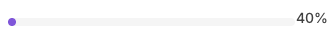
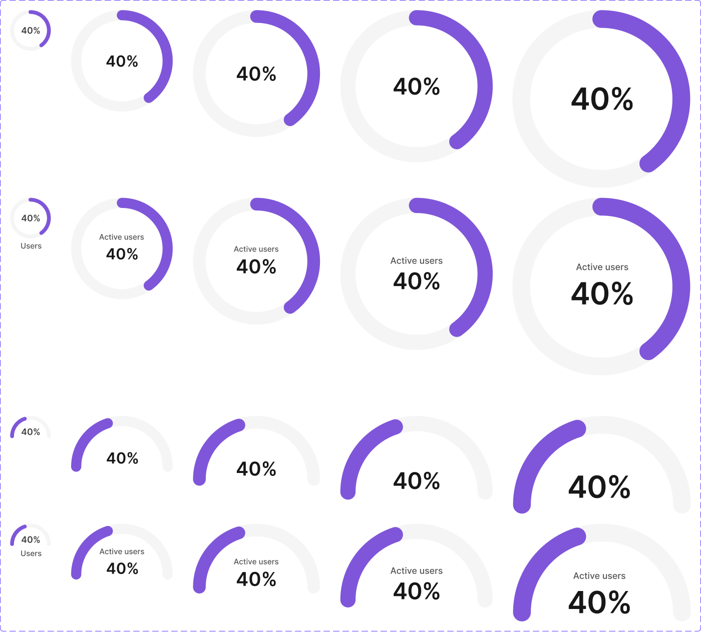
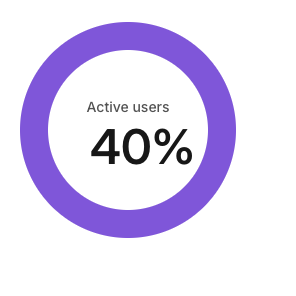

Round 2 iteration 2 — absolute overlays
slider
CANVAS BEFORE (42b86e5)
BEFORE (42b86e5) OVERLAYS (r2 iter 2)
OVERLAYS (r2 iter 2) progress-bar
CANVAS BEFORE (42b86e5)
BEFORE (42b86e5) OVERLAYS (r2 iter 2)
OVERLAYS (r2 iter 2)
avatar md
CANVAS BEFORE (42b86e5)
BEFORE (42b86e5)n/a
OVERLAYS (r2 iter 2) progress-circle
CANVAS
BEFORE (42b86e5)n/a
OVERLAYS (r2 iter 2)
tooltip dark
CANVAS
BEFORE (42b86e5)n/a
OVERLAYS (r2 iter 2)